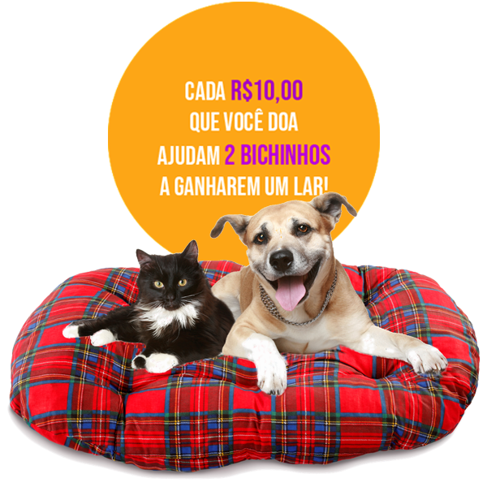

Entre em Contato Conosco
Aqui está nosso endereço e nossas principais redes caso queira conhecer mais de nosso trabalho ou adotar um pet.
 Av. Túlio de Rose, 80 - Passo d'Areia, Porto Alegre - RS, 91340-110
Av. Túlio de Rose, 80 - Passo d'Areia, Porto Alegre - RS, 91340-110


Adote um amigo para a vida toda ❤️
menuSomos uma iniciativa dedicada a resgatar e encontrar lares amorosos para animais abandonados. Acreditamos que todos os pets merecem uma segunda chance e fazemos o possível para dar a eles um futuro melhor. Nossa missão é conscientizar sobre a importância da adoção e garantir que cada animal encontre um lar seguro e amoroso.
A Pet Page é a maior plataforma online de adoção de animais do Brasil. A gente acredita que todo animal de rua merece um lar. Por isso, nosso trabalho é conectar os animais que estão em abrigos com pessoas que estejam procurando por um doguinho ou gatinho pra chamar de seu.
Faça sua doação e ajude-nos a continuar esse trabalho!
Veja abaixo as formas de ajudar:
A cada 10 reais, você ajuda 2 doguinhos ou gatinhos. Para doar, você pode fazer uma transferência bancária ou PIX:
e-mail: petpage@.com ou CNPJ: 00.000.000/0000-00
Banco: xxxxxx
Agência: 000
Conta-corrente: 0000
Pet Page
CNPJ: 00.000.000/0000-00
Use ração de alta qualidade e evite comida humana.
Ofereça a quantidade correta em horários regulares.
Mantenha água fresca e limpa disponível o tempo todo.
Mantenha vacinas e vermifugação em dia.
Realize consultas veterinárias anuais ou com maior frequência, se necessário.
Cuide da higiene bucal e corporal (banhos, escovação).
Use antipulgas e anticarrapatos regularmente.
Garanta exercícios e brincadeiras diárias para cães e gatos.
Proporcione espaços seguros e brinquedos interativos.
Invista em estímulos mentais, como jogos e arranhadores.
Socialize seu pet para evitar comportamentos indesejados.
Castre para prevenir doenças e crias indesejadas.
Identifique com coleira e, se possível, microchip.
Esses cuidados garantem uma vida saudável e feliz para seu pet! 🐾
Aqui está nosso endereço e nossas principais redes caso queira conhecer mais de nosso trabalho ou adotar um pet.
Av. Túlio de Rose, 80 - Passo d'Areia, Porto Alegre - RS, 91340-110